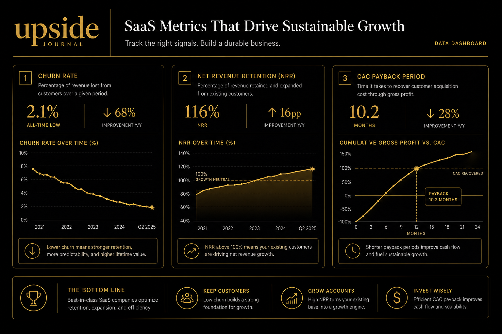

Here's the number that's quietly killing SaaS fundraising rounds in 2026: churn rate.
Not ARR. Not logo count. Not that impressive month-over-month growth chart your team spent three days designing. The metric that's separating funded companies from dead-on-arrival pitch decks is how fast you're losing the customers you already have — and most founders still can't quote theirs from memory.
The Shift Nobody Announced
Something changed in how Series A and B investors evaluate SaaS companies, and it happened without a memo.
Through 2023 and 2024, the fundraising conversation was dominated by growth. Revenue multiples. ARR milestones. The mantra was simple: grow fast, worry about retention later. But the 2025 correction — a wave of down rounds, bridge extensions, and quiet company deaths — rewired investor psychology.
The new calculus is brutally straightforward: a company that grows 20% monthly but churns 8% is a company that will never reach escape velocity. Investors have done the maths. They've watched portfolio companies hit $5M ARR only to plateau because the back door was wide open.
Now, the first question in a Series A diligence call isn't "What's your ARR?" It's "What's your net revenue retention?"
The Numbers That Matter in 2026
According to current benchmarks, here's what investors expect before they'll write a $10M cheque:
Net Revenue Retention (NRR) above 100%. This is the headline metric. NRR captures churn, contraction, and expansion in a single number. An NRR of 120% means your existing customers are growing their spend by 20% net of any losses. Best-in-class SaaS companies — the ones filing 10-Ks with NRR figures that make VCs salivate — routinely report 120%+. If yours is below 100%, you don't have a retention problem. You have a business model problem.
Monthly churn below 2%. For B2B SaaS, anything above 2% monthly churn at Series A stage is a red flag. That's a 21% annual churn rate — meaning you need to replace a fifth of your customer base every year just to stand still. At Series B, the bar tightens further: investors want to see sub-1.5% monthly churn as evidence the product has found genuine stickiness.
CAC payback under 12 months. The cost of acquiring a customer should be recovered within a year through their subscription revenue. Anything longer means you're financing growth with investor capital rather than unit economics — and in 2026, that's a conversation-ender.

Gross margins above 70%. Standard for software, but founders building AI-heavy products are discovering that inference costs, data pipeline overhead, and model maintenance can compress margins below the threshold. Investors notice.
Why Churn Compounds Against You
The insidious thing about churn is that it's not linear — it's compounding. A 5% monthly churn rate doesn't just mean you lose 60% of customers per year. It means the customers you acquired in January are 46% gone by December. The ones from March are 35% gone. Every cohort is decaying simultaneously.
This is the "leaky bucket" problem that every SaaS founder intellectually understands but emotionally ignores — because acquisition is exciting and retention is boring. Marketing launches generate Slack celebrations. A 0.5% improvement in churn rate generates a spreadsheet update.
But here's the uncomfortable truth: reducing churn from 5% to 3% monthly has the same revenue impact as doubling your acquisition rate. The maths is unforgiving. And investors in 2026 know this because they've been burned by the companies that didn't.
The Logo Quality Trap
There's a related shift happening that deserves attention: investors now scrutinise who is churning, not just how many.
Losing ten $500/month customers is very different from losing one $50,000/year enterprise contract. Revenue churn — measured as MRR lost rather than logos lost — is the metric that actually matters. A company with low customer churn but high revenue churn is losing its best accounts. That's a product problem hiding behind a vanity metric.
Conversely, some of the strongest SaaS companies in 2026 are the ones reporting negative net revenue churn — where expansion within existing accounts exceeds all losses. If your product naturally drives upsells (more seats, more usage, more features), you're building the kind of compounding revenue engine that makes investors competitive on term sheets.
What This Means for Founders Raising Now
If you're preparing for a fundraise in the next 6–12 months, here's the playbook:
1. Instrument your churn. You should be able to segment churn by cohort, plan tier, industry, and acquisition channel. If you can't, you're not ready for diligence.
2. Build your NRR story. Show the trajectory, not just the snapshot. An NRR that moved from 95% to 110% over 12 months tells a more compelling story than a static 115%.
3. Fix the first 90 days. Most churn happens in the onboarding window. If your time-to-value is longer than your customers' patience, no amount of growth marketing will save you.
4. Price for expansion. Usage-based pricing, tiered feature sets, and seat-based models create natural expansion paths. Flat-rate pricing caps your NRR ceiling.
The founders who internalise this shift — who treat retention as a growth lever rather than a defensive metric — are the ones who'll close rounds in 2026. The rest will learn the hard way that the fastest way to grow a SaaS company is to stop losing the customers you already have.